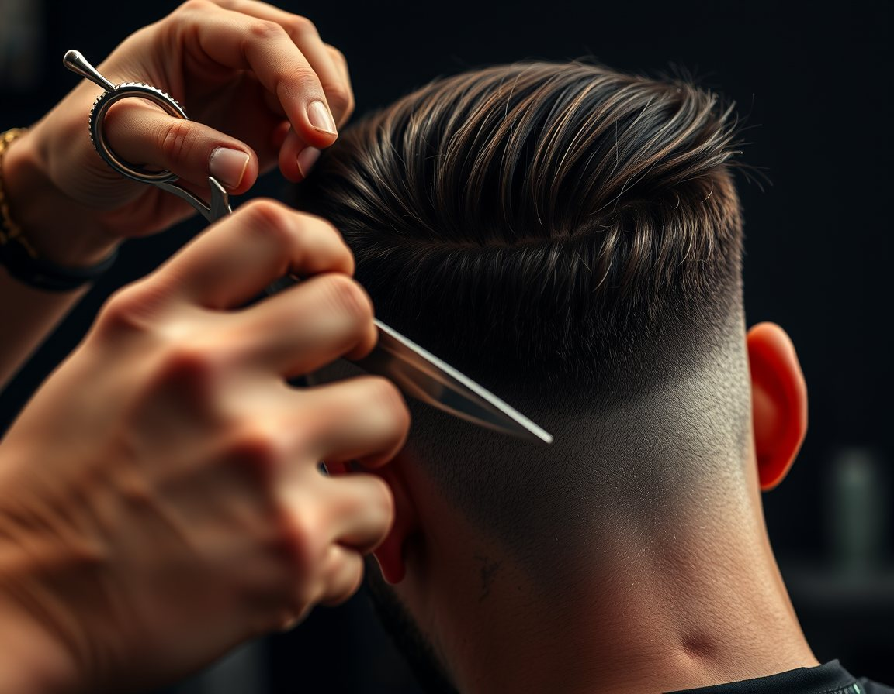
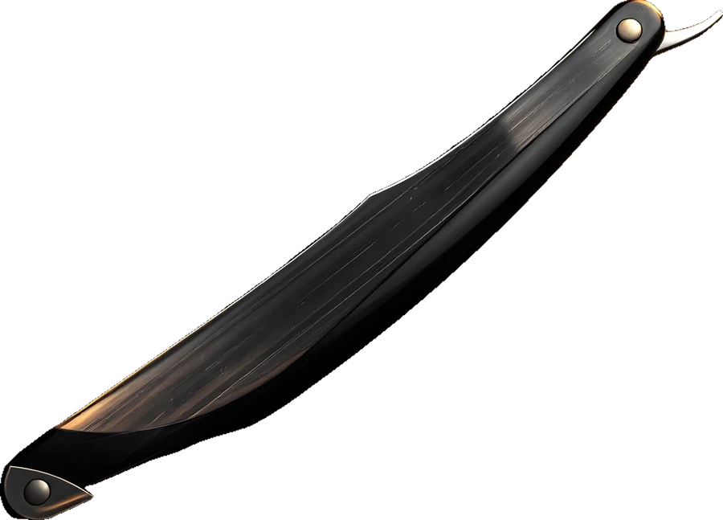
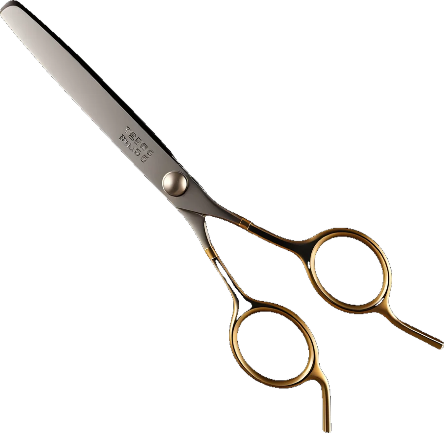
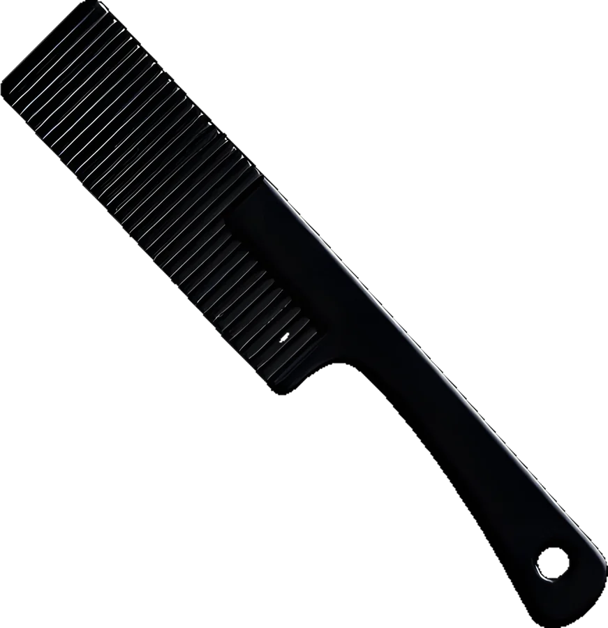
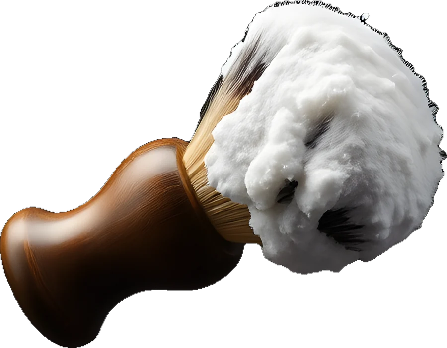
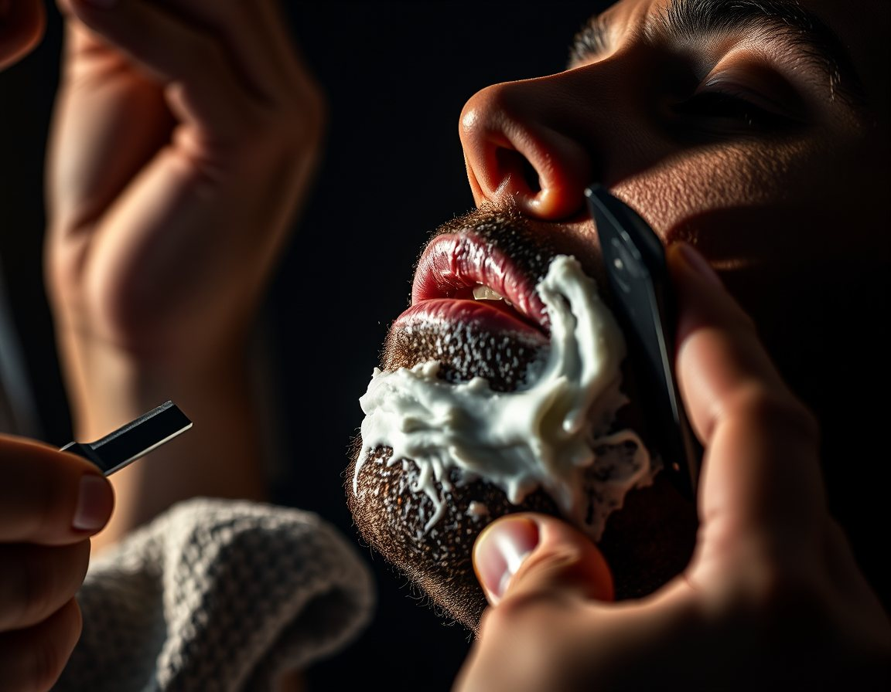
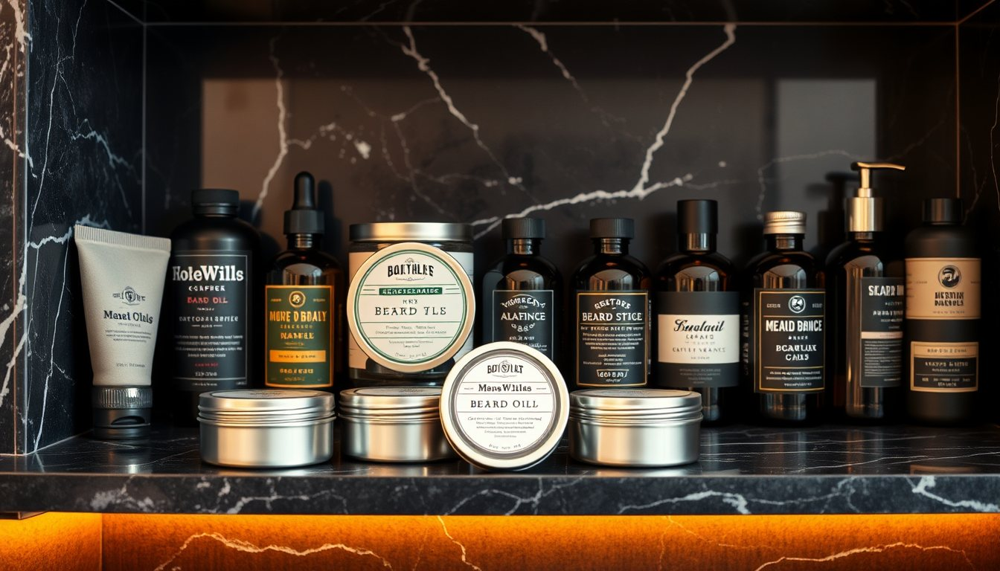
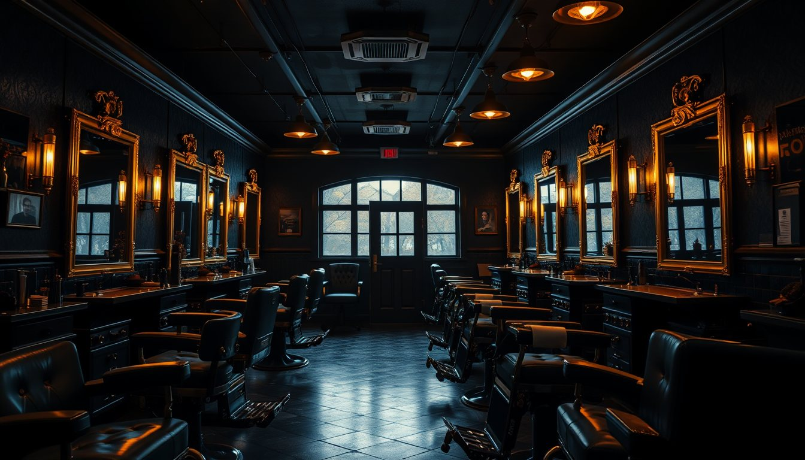

i.
Kesim
Yıkama, kesim ve şekillendirme. Yüz hattına göre planlanır.




Berber · Denizli · 2012'den beri

Yıkama, kesim ve şekillendirme. Yüz hattına göre planlanır.

Gözenekler açılır, köpük sürülür, ustura tek geçişte.

Sakal yağı, balsam ve sana uygun ürün önerisi.
Düğünden bir hafta önce deneme kesimi, düğün günü sabah özel randevu. İstersen sağdıçların da gelsin.
Fiyatlar örnektir
Kurucu · 18 yıl. Klasik kesimler ve ustura tıraşın ustası.
9 yıl. Fade ve sakal hattında titiz.
4 yıl. Modern kesimler, çocuklarla sabırlı.
